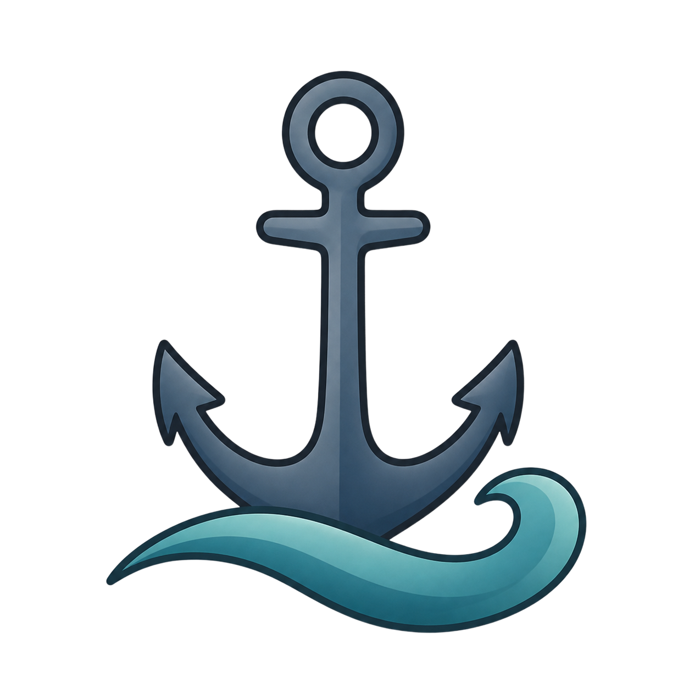
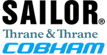

20+ Jahre
Berufserfahrung
In Navigation & Communication Systems weltweit – an Bord von Handels- und Spezialschiffen.
Service Engineer für Navigation & Communication Systems – Wartung, Reparatur und Inbetriebnahme von Radar, ECDIS, GMDSS, AIS, Echolot, EPIRB und VHF auf Handelsschiffen, Yachten und Offshore-Anlagen.
In Navigation & Communication Systems weltweit – an Bord von Handels- und Spezialschiffen.
Wartungen, Reparaturen und Inbetriebnahmen auf Brücken aller gängigen Hersteller.
Notfall-Service und Hafen-Einsätze in Nord- und Ostsee – kurzfristig und zuverlässig.
Von der jährlichen Funkprüfung bis zur kompletten Brücken-Inbetriebnahme – herstellerneutrale Wartung, Reparatur und Modernisierung Ihrer Navigations-, Kommunikations- und Sicherheitsausrüstung. Auf Wunsch mit individuellem Wartungsvertrag.
Jetzt anfragen
Von der jährlichen Funkprüfung über Reparaturen bis hin zu Wartungsverträgen – Service entlang des gesamten Lebenszyklus Ihrer Bordelektronik.
Annual Performance Tests, GMDSS Radio Surveys und Zertifikatserneuerung für Schiffsfunkanlagen nach SOLAS Kapitel IV. Vorbereitung auf Klassen-Audits führender Klassifikationsgesellschaften.
Termin anfragenFunktions- und Leistungsprüfungen für Radar (S- & X-Band), ECDIS, AIS, Echolot und Heading Control Systems (HCS) sowie Datenausleitung am VDR – nach den geltenden Prüfvorgaben.
Prüfung anfragenService für EPIRB (Shore-Based Maintenance), SART, NAVTEX, VHF, MF/HF und Inmarsat. Nachrüstung sowie Umprogrammierung beim Wechsel von Flagge oder Eigentümer.
Service anfordernFernwartung und Diagnose per Telefon, E-Mail, WhatsApp, AnyDesk und TeamViewer – schnelle Hilfe ohne Anreise, weltweit verfügbar während der Bürozeiten.
Verbindung anfragenIndividuelle Service-Pakete: Shore-Based Maintenance, jährliche Wartung oder Full-Service-Vertrag inklusive priorisiertem Einsatz und planbaren Kosten über mehrere Jahre.
Angebot einholenReparatur, Fehlerdiagnose und Ersatzteilbeschaffung für Anlagen aller führenden Hersteller – Furuno, JRC, Sailor/Cobham, Simrad, Raytheon Anschütz, MARIS und weitere.
Reparatur meldenVertrauensvolle Zusammenarbeit mit Reedereien, Werften und Herstellern führender Navigations- und Kommunikationssysteme.


Sie haben eine Anfrage zu Wartung, Reparatur oder Inbetriebnahme? Schreiben Sie mir kurz – ich melde mich umgehend zurück.